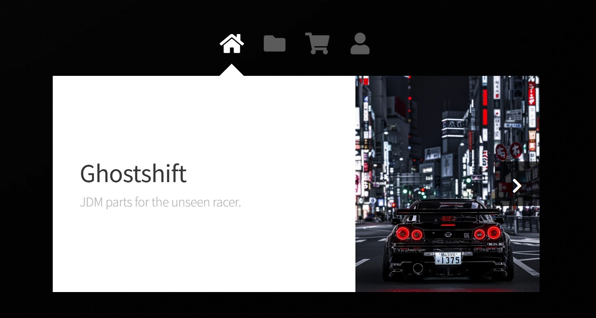
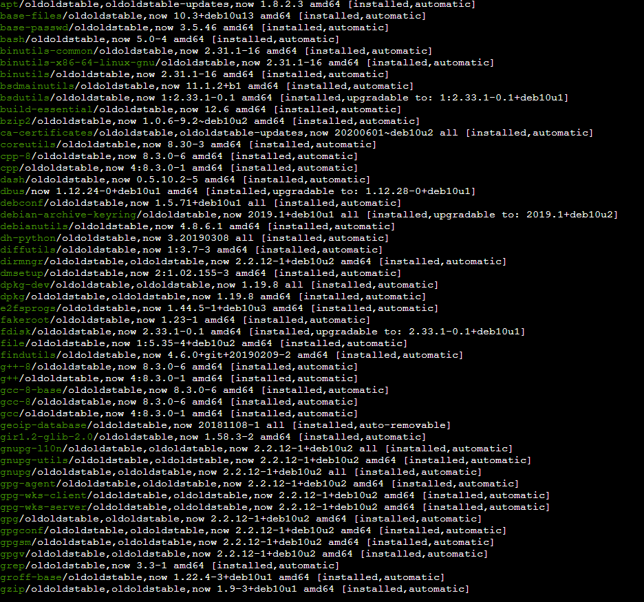
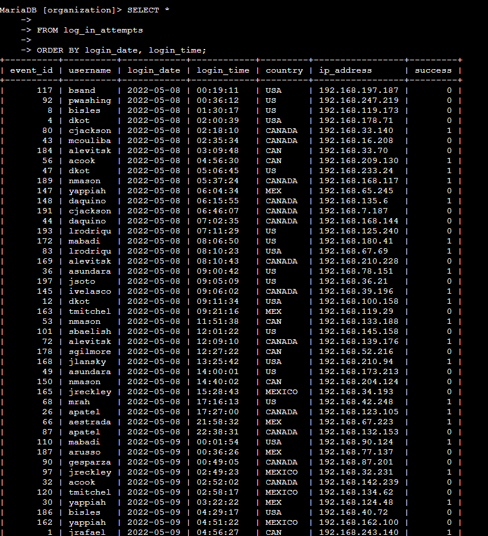
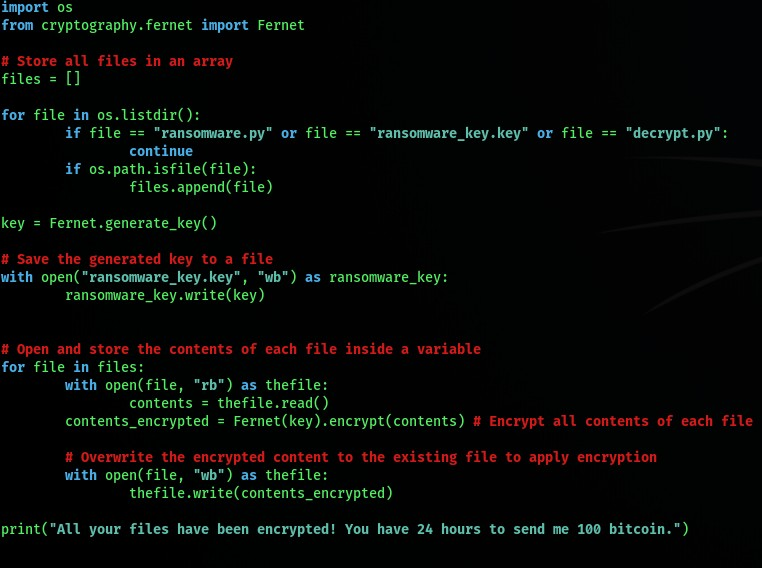
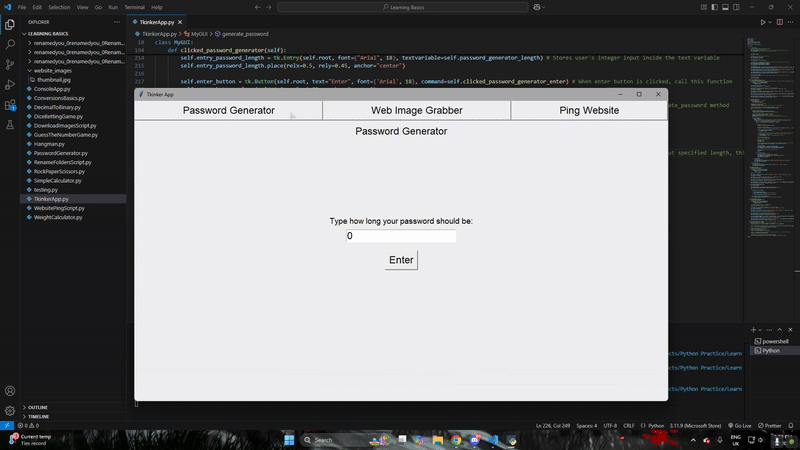
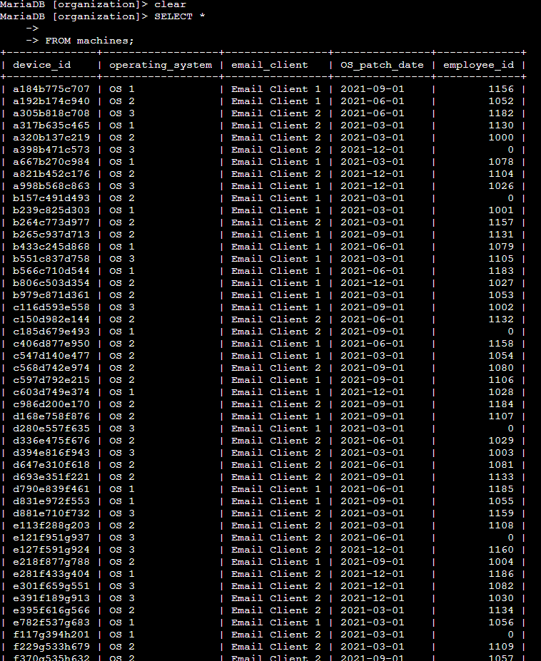
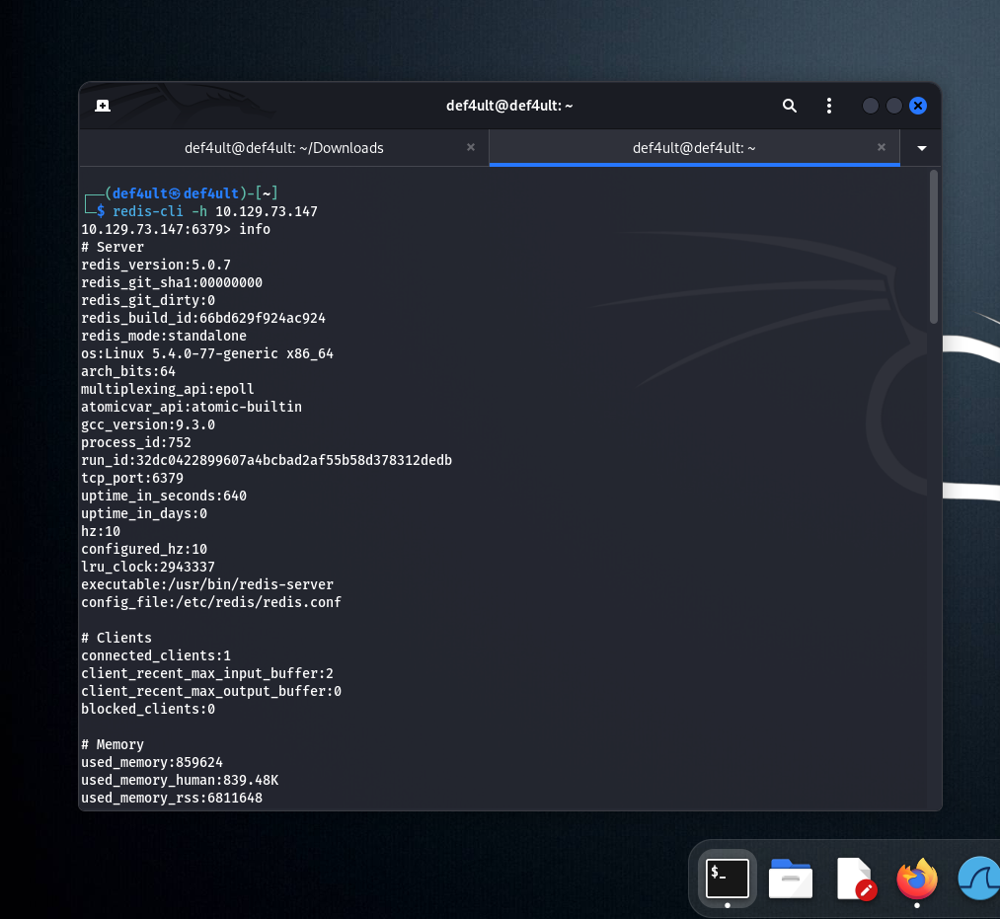
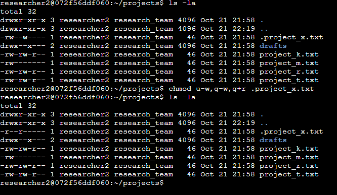
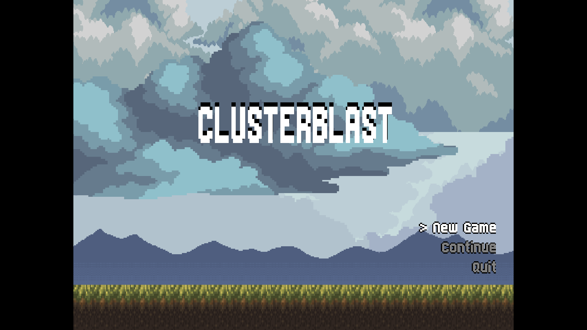
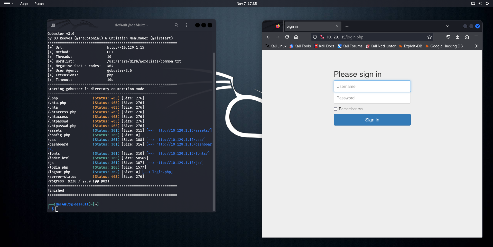

I am an aspiring IT Support professional with hands-on experience
across Linux, networking, cybersecurity, web development, and
troubleshooting. I enjoy building practical projects that help me
understand how systems work, from Raspberry Pi network services to
secure web applications and Linux command-line tools.
I am currently working toward entry-level IT Support roles while
continuing to develop my skills in cloud computing, system
administration, and security.
Built a functional e-commerce website from scratch using PHP,
MySQL and JavaScript. Developed secure authentication systems with
hashed passwords and implemented protections against SQL injection
and XSS attacks using prepared statements and input validation.
Designed database structure and integrated cart functionality with
dynamic pricing calculations.


Installed and configured the Suricata intrusion Detection System
on Linux, demonstrating package management, dependency resolution,
and basic IDS deployement within a Linux Enviroment.

Built a Raspberry Pi-based Pi-hole DNS server to provide network
wide ad blocking. Hardened the device by configuring encrypted
DNS, SSH security, Fail2Ban, and a firewall to improve overall
system security.
A self-hosted web platform integrated with a MariaDB database
running on my Raspberry Pi. The system enables user
authentication, media uploads, and deletions, with secure routing
between the Pi and a Windows machine. Built using Python (Flask),
SQL, and a web front-end, it demonstrates remote database
management and full-stack development skills.

Developed an educational proof-of-concept in Python demonstrating
how ransomware encrypts files within a controlled enviroment. This
project explores encryption and recovery using a generated
decryption key.

Developed a desktop application using Python Tkinter featuring a
password generator, image grabber from URLs, and a website pinger
to check site availability.

Wrote SQL queries to retrieve and analyse employee device
information for update planning, demonstrating practical database
querying and filtering.

Demonstrated how a misconfigured Redis instance can be exploited
to gain remote access within a controlled lab enviroment,
highlighting common security risks and mitigation strategies.

Demonstrated Linux file and directory permission management using
chmod, ls, and related commands, showcasing an understanding of
UNIX permission models and secure access control.

Developed a complete 2D action platformer featuring enemy AI, boss
encounters, particle effects, multiple endings, and custom
gameplay systems. This project strengthened my programming,
debugging, and game architecture skills.
